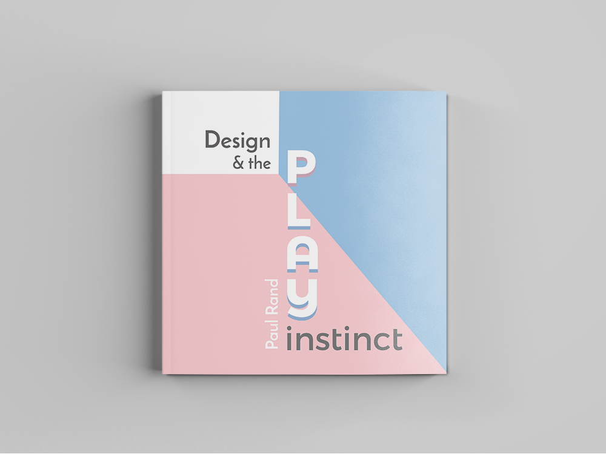

Paul Rand Book
The objective of this project was to create a book based on text from Paul Rand's "Design & the Play Instinct" discussion. The idea of this particular book was based off of the idea of "playing within the rules", a reoccurring theme throughout Paul Rand's discussion. A lighter shade of red and blue were used to create a more toned down yet playful atmosphere, and the book cover was created to resemble that of a box, showing that the book itself is playing within the "rules".
Check it out here! UMFF Event Poster
The goal of this project was to create an event schedule poster for the 2017 Universe Multicultural Film Festival held from March 31rd to April 2nd. To convey the nature of the festival, different shades of skin color were incorporated in the title of the poster. To represent diversity, colors of the rainbow were used for each individual event, which also serves to help distinguish the events at the same time. The center icon combines the idea of film and universe. This poster was made in a minimalistic to allow the audience to be able see the poster and read the information easily.
Type Hierarchy
The main objective of this projcet was to create a series of 10in.x 10in. flyers for a lecture series with a focus on type hierarchy. Certain rules were to be followed in each of the flyers. To depict the title as the largest, a larger font towards the top left appeared to be the most successful. The events were then grouped individual to distinguish from one another. The words were put playfully to show the potentials of type, while keeping the contents legible at the same time.
BTS Event Poster
The goal of this project was to excercise Adobe Photoshop and Illustrator through the creation of an event poster based on an upcoming event. This specific poster was created for a concert of a Korean pop group, named BTS. To effectively convey the contents of the event, the group members were placed as the focus of the poster, along with a blue green color scheme and butterflies to relate to their recent album, which discussed youth utilized the theme "papillion", meaning butterfly in French.
Typeface Poster
This project aimed to excercise Illustrator and research skills while increasing the understanding of typefaces by creating a poster for a well-known font. This particular poster displayed Weiss, a German typeface used in past German textbooks. The most distinctive letter of Weiss is the letter W, which was placed as the main attraction of the poster. In addition, the poster was created to be similar to a book page to demonstrate its past uses. Yellowing of the poster and the colors red and black were also used to add resemblance to its past uses.
Design Career Fair 2017
The Design Career Fair (DCF) is an annual design event where design students are able to speak to potential employers for future career opportunities. Each year, a different theme is chosen to represent the idea of design through the eyes of the students. Below are ideations that took place in order to execute this year's theme, "Playground", from start to finish.
This was a recoloring of the DCF logo, which utilized colors chosen by members of Design Careers Club, consisted of playful hues of blue, yellow, green, and red. The idea of gradients blends the colors together as a playful take on the teamwork involved in design. The colors were tested against both a dark and light background to provide versatility in different promotional materials.
After the theme of the fair was decided to be "Playground", brainstorms on a variety of promotional materials were assigned to members of Design Careers Club. Two of the assigned tasks were place cards for companies and geofilters for the duration of the event.The place cards were meant to include both the companies' names as well as whether or not they are available. The Snapchat geofilters utilized the color palette chosen for the fair and incorporated several elements of design and the fair's theme, playground.

Sweet Traditions
Sweet Traditions is a popular sweets bakery based in North Carolina. They are known for their cupcakes and their food truck, Belle, that travels around the Triangle (Durham, Raleigh, Chapel Hill). The follow are images that were created for their website and Instagram, as well other promotional materials that were created to strengthen their brand identity.
Prime Partner Program
Prime Partner Program is a program that connects realtors to the company Prime Mortgage Lending (PML). The objective of this projet is to create a logo that would represent the program by following the theme of "connections". As a result, several logos drafts were created to show the idea of connection through the letters, with the final logo (top right of photo below) being a series of Ps connected by dots and lines , with a house as the main connector. A Facebook cover photo was also created in conjunction with the logo.